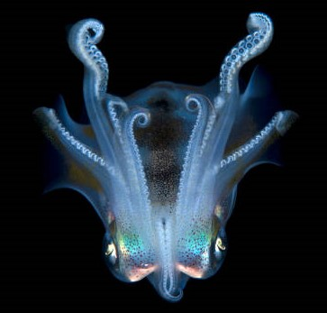
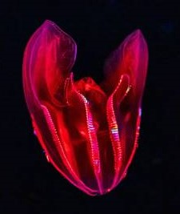
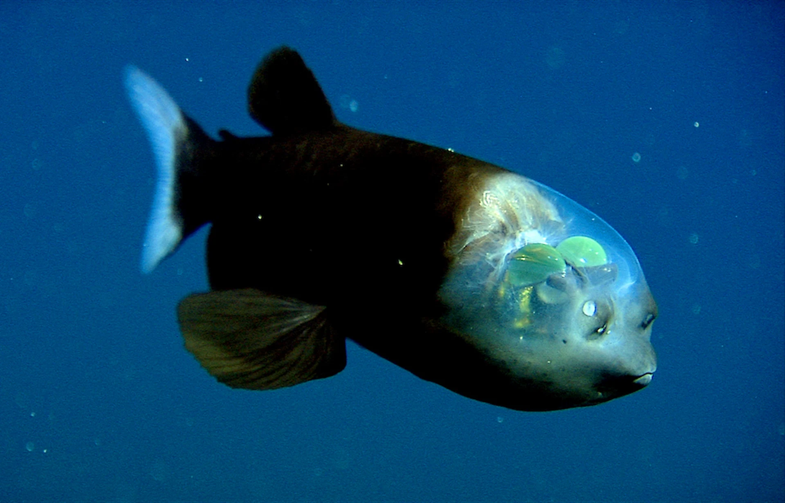

Mysteries of the Deep
From glowing predator to elusive giants, the ABYSS awaits. Uncover the hidden wonders of the deep ocean.
LIFE BELOW THE LIGHT ZONE

A mysterious deep-sea giant rarely seen by humans, with massive
tentacles.

It has a deep crimson, red gut that makes it invisible in the dark
deep sea.

Transparent head and tubular eyes make this fish look straight out
of a sci-fi story.

An ancient shark species with a protruding jaw, lurking silently
in the abyss.
Far below the surface, in a world untouched by light, life evolves into forms both alien and beautiful, reminding us how much of our planet is still unexplored.
Ready to explore the deep ocean waters?
Discover unique creatures hidden beneath the ocean’s surface.